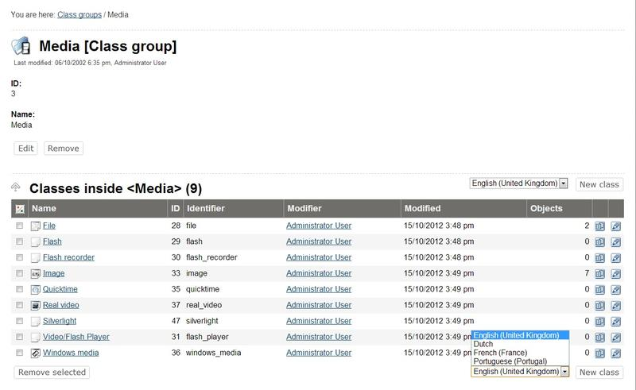
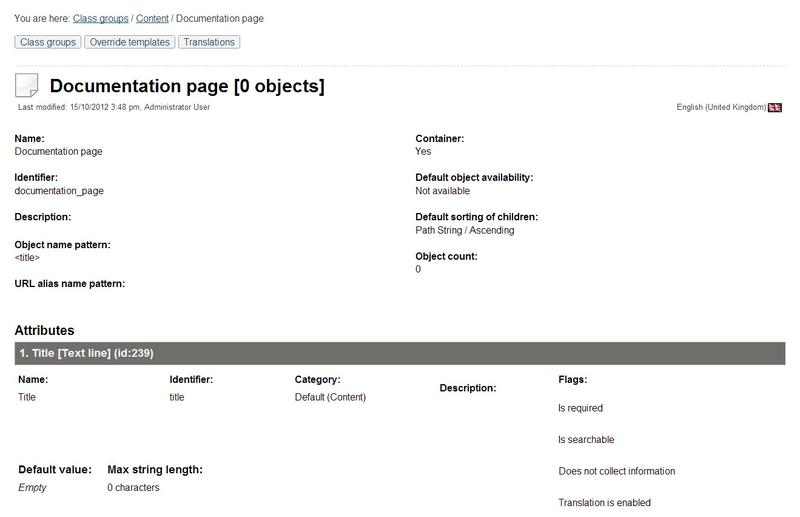
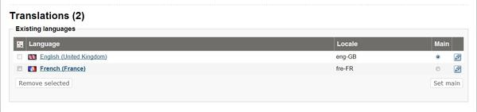

Translatable class attributes
In eZ Publish 3.9.0 and later versions, it is possible to translate the names of the attributes when editing the different classes. This allows the system to display the attribute labels in the correct language when users are working with (both editing or viewing) the different translations. For example, if a class is being used to store information about cars in both English and Norwegian, it is a good idea to translate the names of the class attributes so that the "Color" attribute of the cars would appear as "Color" or "Farge" depending on whether the object is being edited in English or Norwegian.
A class can be created using any of the languages that have been added either using the setup wizard or the "Languages" part of the "Setup" tab in the administration interface. When a class is created, it's main language will be set to the language that was used during creation. The class name and the names of the class attributes that are in the main language can not be removed from the class. However, if the class exists in several languages, the main language can be changed and thus the class name and the names of the class attributes that are not in the main language can be removed. Changing the main language and removing languages/translations from a class can be done from within the "Translations" window in the class view interface.
Creating classes in different languages
The administration interface allows you to create content classes from scratch using any of the translation languages. The following text reveals how this can be done.
Access the "Setup" tab in the administration interface, click "Classes" on the left and select the class group that you wish to add a new class to. You should see the list of classes assigned to this group.
Use the drop-down list of languages located in the bottom of the "Classes inside <group_name>" window to choose the desired language for the class that you wish to create. Click the "New class" button (see the following screenshot).

Creating Classes in Different Languages
If the desired language is not listed in the drop-down list, make sure it exists in the global translation list. You can add new languages to this list as described in the "Managing the translation languages" section. Note that the newly added languages will become available after the caches have been cleared.
You will be taken to the
class edit interface, where the language that the class is being edited in will be shown in the top right corner. Specify
name, identifier, object name pattern and container flag for the newly created class and add the desired attributes using the drop-down list located in the bottom of the class edit interface. After adding the attributes, click "OK" to save the class.
Translating classes to different languages
The administration interface allows you to translate the names of content classes and their attributes to any of the translation languages. The following text reveals how this can be done.
In the administration interface, locate the class that you wish to edit and click on the name of the class. You will be taken to the class view interface.
Select the "Another language" item from the drop-down list and click the "Edit" button as shown in the following screenshot.
The system will display the language selection interface for content classes (see the following screenshot).

Class Language Selection
Use the language selection radio buttons to select the language that you wish to translate the names of the class attributes (in the screenshot above, Norwegian is selected). It is also possible to choose which existing language the newly translated names should be based on. You can select one of the existing languages or "None". When a language is chosen instead of "None", the system will copy the existing class attribute names from the selected language and allow them to be modified/translated (otherwise, you will have to type in everything from scratch into empty fields).
After clicking the "Edit" button, the system will bring up the class edit interface where you should specify the class name and the names of the class attributes in the selected language. When finished, click "OK" to save your changes.
Editing classes in different languages
You can edit a content class in any of the languages that it exists in. The following text reveals how this can be done.
Using the "Edit" button
In the administration interface, locate the class that you wish to edit and click on the name of the class. You will be taken to the class view interface.
Select the desired language from the drop-down list and click the "Edit" button. The system will bring up the class edit interface where you can change the class name and the names of the class attributes in the selected language. When finished, click "OK" to save your changes.
Using the translations window
In the administration interface, locate the class that you wish to edit and click on the name of the class. You will be taken to the class view interface.
The horizontally aligned switches in the upper area control the visibility of the different windows. Click on the "Translation" switch to enable the translations window (see the following screenshot).

The Translations Button
Click on the "Translations" window to activate it and make it visible at the bottom of the screen. The following screenshot shows how this window for a class that exists in two languages.

The Class Translations Window
Locate the language that you wish to edit and click on the language's corresponding edit icon (on the right hand side). The system will bring up the class edit interface.
Changing the main language
If a class exists in several languages then you can choose which of them will be the main language.
In the administration interface, locate the class that you wish to edit and click on the name of the class. You will be taken to the class view interface.
Enable the translations window, select the desired language using the radio buttons and click the "Set main" button.
Removing languages
It is possible to remove languages/translations from a class (except the main language). This can be done from within the "Translations" window in the class view interface. When either one or several languages are selected using the check-boxes (on the left hand side), the "Remove selected" button can be used to carry out the actual removal of the selected translations.
Powered by eZ Publish™ CMS Open Source Web Content Management. Copyright © 1999-2013 eZ Systems AS (except where otherwise noted). All rights reserved.